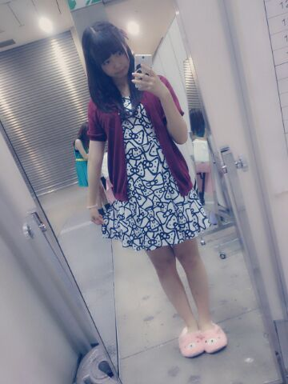
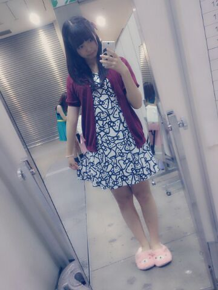

| 2013/09 21 Sat | ひめたん(*>ω<*)そ の345 |
ゆったん
(斉藤優里ちゃん)が
ブログでゆってたんだけどねー
『ダンガンロンパ』みてるんだよ
霧切さん舞園さん石丸くん推しだよ♪
だから今は霧切さんのこと
応援してるんだよ(´;ω;｀)
みんなあ帰ってきて(´;ω;｀)うう
ゆったんの苗木くんのものまね
「それは違うよ！(論破)」
似てるんだよー
そしてひめたんも 超高校級の称号がほしいよー
でもビームなら石丸くんも出すし
アイドルなら舞園さんいるし......
ねーダンガンロンパ観てるひと
一緒に考えよーそして熱く語ろー
そしてひめたんもアニメイト連れてってー！
前回のブログの写め
若月 (若月佑美ちゃん)が褒めてくれたよー♪
それから、日芽香撮ったげる！って
万理華 (伊藤万理華ちゃん)が
ピン写め撮ってくれたので それも近々貼りますー
みりりん (渡辺みり愛ちゃん)ほんとに可愛いい。
ひめたんはみんなに甘えたいひとだけど
みり愛ちゃんの前ではお姉さんになりたい。
にゅー推しメン(〃ω〃)

今日の服は
ワンピースもカーディガンも
earth music & ecology ☆
ワンピがりぼん柄で
とってもとってもキュート∩^ω^∩
このワンピースはラフォーレ原宿店限定品！
そうそう、このくまさんスリッパは
最近ままが握手会用にって
買ってきてくれたんだよー

５部はみつあみじょし。
４部はさらさらストレート。
どっちもリクエストの多かったヘアですよー
とゆーことです今日は東京個握でした
来てくださったみなさん
本当にありがとうございました♪
はじめましての方がたくさんいらっしゃって
ひめたんは嬉しかったよー///
おなじみの方もとっても安心するよー！
乃木どこみたよーNOGIBINGOみたよー
Zepp行ったよー氣志團万博いったよー
ブログいつもみてるよーコメントしてるよー
りぼんかわいいねー夜寝れるようなったー？
とかとかいろいろお話したね( ^ω^ )
ぜんぶ嬉しいです。
思えば東京個握も久々なんだねー
代々木とかサイン会あたった方は
たくさん宣言してくださった！
楽しみにしてるねよー♪
ブログでゆってたんだけどねー
『ダンガンロンパ』みてるんだよ
霧切さん舞園さん石丸くん推しだよ♪
だから今は霧切さんのこと
応援してるんだよ(´;ω;｀)
みんなあ帰ってきて(´;ω;｀)うう
ゆったんの苗木くんのものまね
「それは違うよ！(論破)」
似てるんだよー
そしてひめたんも 超高校級の称号がほしいよー
でもビームなら石丸くんも出すし
アイドルなら舞園さんいるし......
ねーダンガンロンパ観てるひと
一緒に考えよーそして熱く語ろー
そしてひめたんもアニメイト連れてってー！
前回のブログの写め
若月 (若月佑美ちゃん)が褒めてくれたよー♪
それから、日芽香撮ったげる！って
万理華 (伊藤万理華ちゃん)が
ピン写め撮ってくれたので それも近々貼りますー
みりりん (渡辺みり愛ちゃん)ほんとに可愛いい。
ひめたんはみんなに甘えたいひとだけど
みり愛ちゃんの前ではお姉さんになりたい。
にゅー推しメン(〃ω〃)
今日の服は
ワンピースもカーディガンも
earth music & ecology ☆
ワンピがりぼん柄で
とってもとってもキュート∩^ω^∩
このワンピースはラフォーレ原宿店限定品！
そうそう、このくまさんスリッパは
最近ままが握手会用にって
買ってきてくれたんだよー

５部はみつあみじょし。
４部はさらさらストレート。
どっちもリクエストの多かったヘアですよー
とゆーことです今日は東京個握でした
来てくださったみなさん
本当にありがとうございました♪
はじめましての方がたくさんいらっしゃって
ひめたんは嬉しかったよー///
おなじみの方もとっても安心するよー！
乃木どこみたよーNOGIBINGOみたよー
Zepp行ったよー氣志團万博いったよー
ブログいつもみてるよーコメントしてるよー
りぼんかわいいねー夜寝れるようなったー？
とかとかいろいろお話したね( ^ω^ )
ぜんぶ嬉しいです。
思えば東京個握も久々なんだねー
代々木とかサイン会あたった方は
たくさん宣言してくださった！
楽しみにしてるねよー♪

 受験勉強がんばるから一回でいいから
受験勉強がんばるから一回でいいから
本気で応援してもらえませんか？
本気ね？本気の本気！！！笑
わかった超本気で応援する！
でもね無理はしてほしくないからね
だからちゃんと息抜きもするんだよ？
お受験頑張れますように。
ひめたんびーむ(<・ω・>)
最近どれだけ忙しくても
ひめたんブログにコメントしてるんだぁ〜
褒めて〜ｗｗ
いーこいーこいーこ( ^ω^ )/( ^ω^ )
素晴らしいね。
そんなことされたら、もう、ほんとに、
大好きになっちゃうは///
ひめたんは、"永遠"の何歳なの？笑
いやいやひめたんは歳とることになってますよ(笑)
50になっても60になっても
ひめたーんでいたいなーと思いまーすよー
びーむ(<・ω・>)あ、もういいって
私はさゆにゃん推しで、
次にひめたんが好きで、でも
握手会とかはひめたんとこ行けなくて...
それでもずっと応援してていいですか？
嬉しいよ(〃ω〃)ありがとう！
これからもずっと、さゆにゃんのことも、
ひめたんのことも応援してくれたら
ひめたんはとっても嬉しい！
でもいつか、気が向いたら......
いつでも待ってるからね♪
ひめたん、何色のリボンが好きですか？
好きなのはぴんくで、
いっぱい持ってるのもぴんくなんだけど
それだと服には合わないんだよね(´・ω・｀)
だから白とかも最近はよく買いますよー
白は最強だよー
ひめたんはラーメンは好きー？？
好きならなにラーメンが好きか教えてちょ
ラーメンは好きだけど
最近食べてないなあー
ちっちゃい頃は博多の豚骨スープのが
周りにも多かった気がするし食べてたけど
最近はあっさりしたのが好みかも♪
俺ね、ブログコメの最後に はなびーむ(*・ω<*)
って使ってんねんけど
...本家に許可もらってなかった(゜Д゜)
てことで許可貰いにきました←
よし、許可します。おめでとう！☆
ひめたんって学校行くときはどんな髪型なん？
最近はいろんなヘアで行くように
がんばっておりますよ！じょし
ストレート、くるくるをベースに
編み込みとかしてみたり
ツイン、ハーフアップとかいろいろ。
究極に時間がないときはポニテか三つ編み∩^ω^∩
ひめたんって寝る前何してる？
お風呂上がりにマッサージするよー
お肌はパックとかして保湿してあげると
つやつやになってくれます。
そして音楽聴きながらうとうと......
ひめたんの友達の友達の友達が
きぃちゃん (北野日奈子ちゃん)だった(・O・ノ)ノ
いやー世間は狭い！
えってかタイトルの番号間違えた前回←
344は幻！
(＊´・ω・＊)
コメント(319)
2013/09/21 23:48